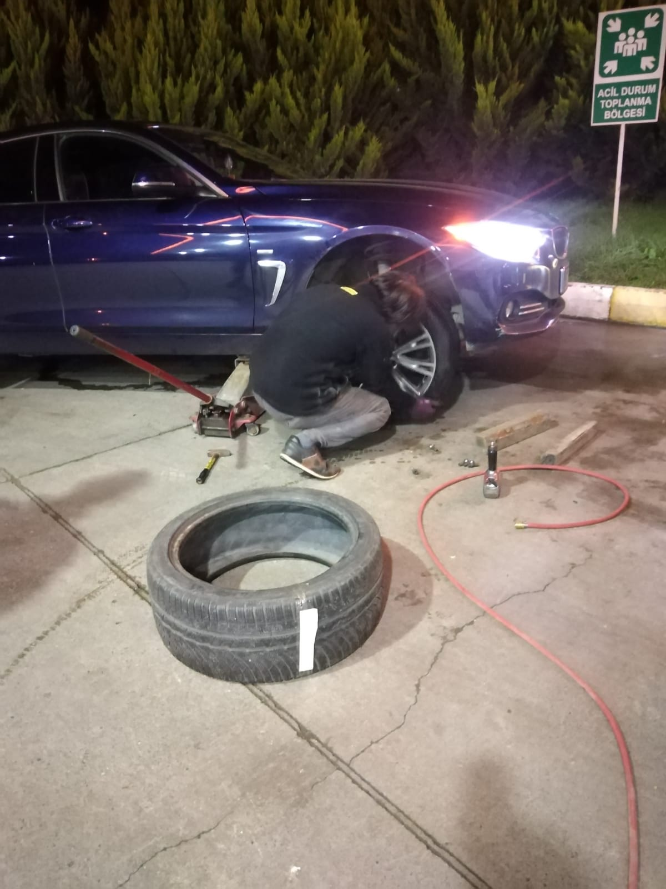
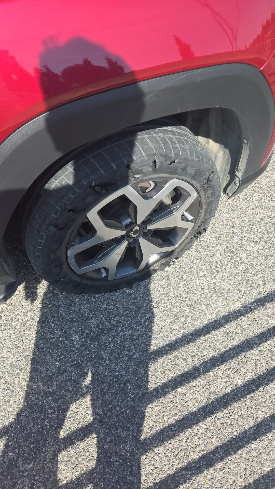
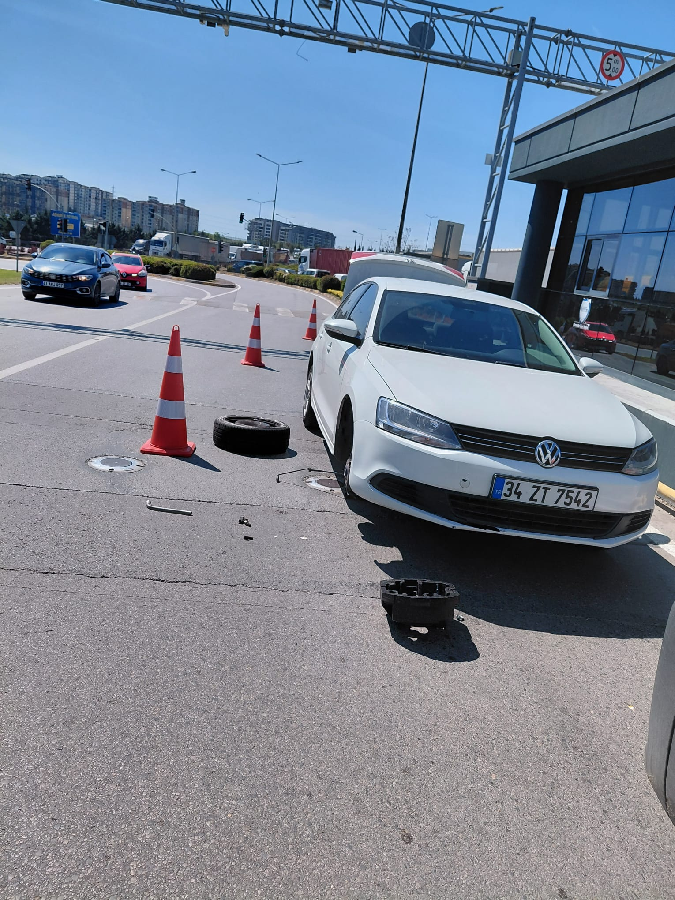
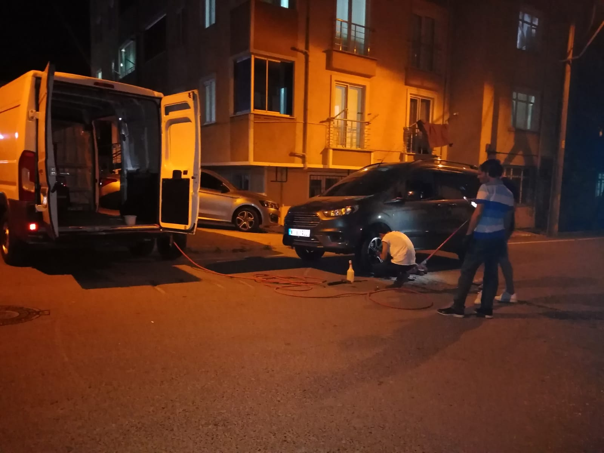
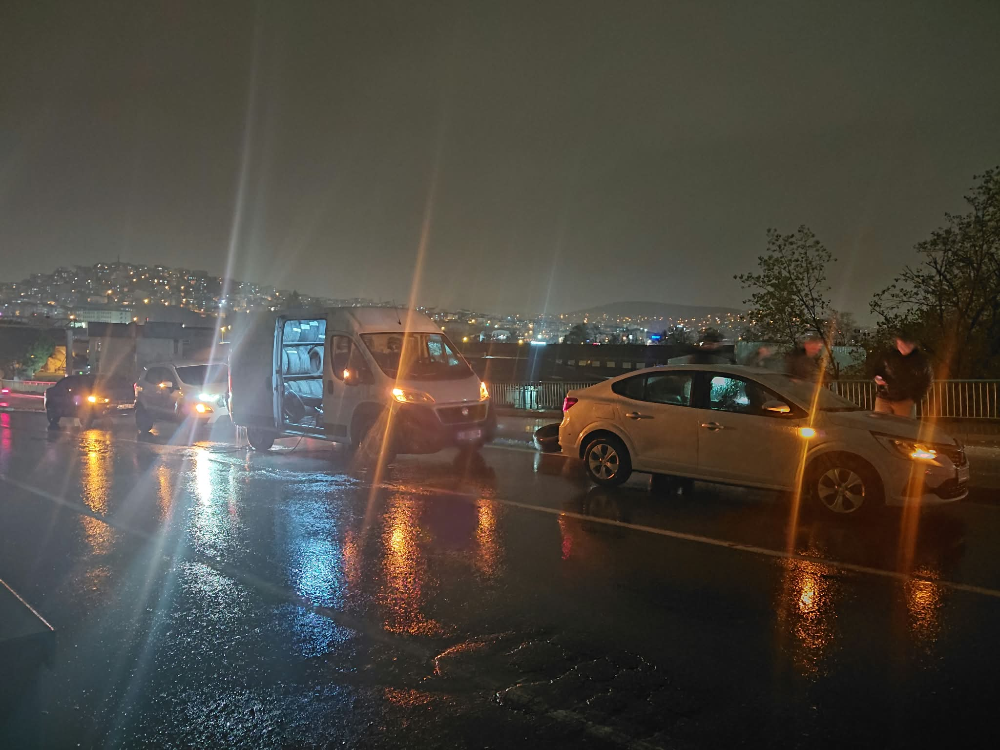
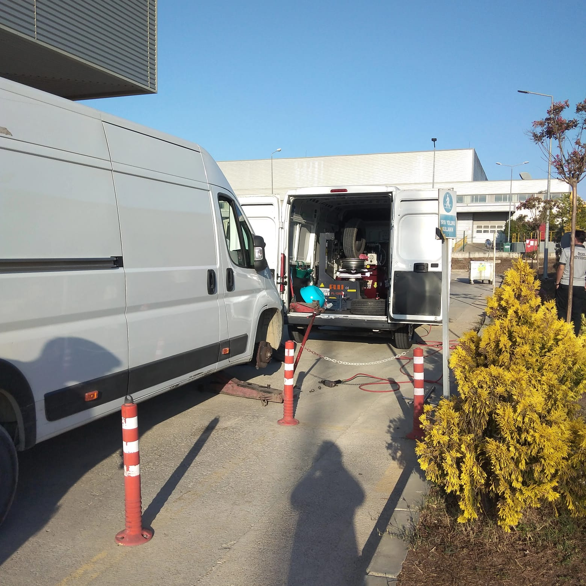

Mobil Lastik Hizmetlerimiz
Tam donanımlı servis aracımız ve uzman ekibimizle bulunduğunuz yere geliyoruz. Gece gündüz, yolda veya otopark — fark etmez.

7/24 Mobil Lastik Değişimi
Yolda lastiğiniz patladığında en son isteyeceğiniz şey sizi kurtaracak birini beklemektir. Biz ortalama 30 dakikada bulunduğunuz noktaya ulaşır, yeni veya ikinci el lastiği yerinde takıp yola devam etmenizi sağlarız.
- Gece gündüz, 365 gün kesintisiz hizmet
- Yeni ve ikinci el lastik seçeneği
- Tüm araç türleri: binek, SUV, hafif ticari
- Değişim sonrası basınç ve güvenlik kontrolü
Patlak Lastik Tamiri
Vida, çivi veya kesik nedeniyle yavaş yavaş sönen lastikleri tamamen değiştirmek zorunda değilsiniz. Hasarın büyüklüğüne ve konumuna göre iki yöntemden birini uyguluyoruz.
- Sünger mantarı ile iç tamir (küçük delikler)
- Sök-tak tamir yöntemi (büyük hasarlar)
- Tamir edilemeyen durumlarda lastik değişimi
- Tamir sonrası doğru basınç ayarı


Stepne Takma ve Sökme
Bagajınızda stepne var ama sıkışmış bijonlar, uygunsuz zemin veya fiziksel zorluk nedeniyle takamıyorsunuz. Profesyonel ekipmanlarımızla saniyeler içinde çözüm üretiriz.
- Hidrolik kriko ile güvenli araç kaldırma
- Sıkışmış bijonlara özel ekipman
- Stepne basınç kontrolü ve ayarı
- Güvenli hıza yönelik bilgilendirme
Basınç ve Balans Kontrolü
Düzensiz lastik aşınması, direksiyon titreşimi ve yakıt tüketimi artışı çoğunlukla yanlış basınç veya balans bozukluğunun işaretidir. Mobil ekibimiz yerinde dijital ölçüm yapar.
- Dijital basınç ölçümü ve ayarı (dört tekerlek)
- Lastik rotasyonu önerisi
- Görsel lastik hasar tespiti
- TPMS sensör kontrolü


Otoyol ve Köprü Acil Yardım
TEM, E-5, Kuzey Marmara Otoyolu ve Osmangazi Köprüsü (Oksiyen) dahil tüm güzergahlarda emniyet şeridinde güvenli şekilde müdahale ediyoruz. Otoyol deneyimi gerektiren bu hizmet için özel eğitimli ekibimiz hazır.
- Kuzey Marmara Otoyolu (KGM) kapsamı
- Osmangazi Köprüsü Oksiyen bölgesi
- Reflektör ve ikaz ekipmanı ile güvenli alan oluşturma
- Jandarma/trafik koordinasyonu bilgisi
Akü Takviyesi
Farlarınızı açık bırakıp akünüz bitti veya soğuk havada akünüz çalışmıyor mu? Lastik hizmetimizin yanı sıra akü takviyesi ve temel elektrik arızası müdahalesi de yapıyoruz.
- Jump-start (takviye) kablosu ile anlık çözüm
- Taşınabilir güç kaynağı (booster pack)
- Akü ömrü hakkında uzman tavsiyesi
- Acil durum elektrik tespiti

Hangi Hizmete İhtiyacınız Var?
Gece gündüz, hafta sonu, bayram tatili fark etmez. Tek aramanız yeterli.
0552 148 41 60